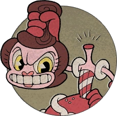

Cuphead es un videojuego con Tiros:
Amuletos:
y Supers:
Cuphead es un videojuego de plataformas y jefes. Su salida a la PS y PC fue el 29 de septiembre de
2017 y para macOS en 2018, su beta salio en 2011 y su demo en 2015. La idea de cuphead surgió del corto animado
“evil's mickey” de china donde mickey mouse ataca a china y un ejército lo defiende, la idea fue de un personaje
que tenía cabeza de taza defensor de china. Los creadores de este hermoso videojuego los hermanos Moldenhauer se
inspiraron en las caricaturas de los treinta sus nombres son Jared y Chad, Jared era el encargado de la
programación y Chad del diseño, el diseño del juego esta echo en dibujos así que para crear la versión final
tuvieron que hacer más de 150,000 dibujos. También tiene una expansión su DLC, las siglas DLC provienen de la
frase Delicious Last Course el nombre de esta expansión. Esta salió el 30 de junio de 2022 con un nuevo
personaje jugable tres armas y amuletos nuevos, 8 monedas y 7 jefes del cual uno de ellos se consigue de una
manera específica. También los hermanos Moldenhauer decidieron que un 100% era poco así que en la versión
original añadieron un 200% pasando los jefes en rango S y los run & guns en rango P(pacifista) y un 300% con el
DLC. En Cuphead te podes equipar 4 cosas: el tiro A que es el tiro que usas cuando empiezas un jefe, el tiro B
que es el segundo tiro que puedes equiparte contra un jefe, los Supers que son habilidades que podemos usar
cuando tenemos el medidor de Supers lleno y los amuletos que te pueden dar un corazón extra, un dash de
invencibilidad y un parry automático, etc. Estas habilidades se consiguen con monedas hay 40 en todo el juego:
30 en los run & guns, 1 en el tutorial, 3 te las da un npc, 3 las consigues con misiones que te dan los npc y
las otras 3 estan escondidas por el mapa. Hay 28 jefes en cuphead: 5 en la Inkwell Isle I, 5 en la II, 7 en la
III y 11 en la Inkwell Hell de los cuales 9 son mini jefes. La historia de este juego empieza con dos hermanos
Cuphead y Mugman que llegaron a un casino y apostaron al diablo todo o nada(cuphead gana=botín del casino,
diablo gana=almas de cup y mug) cuphead cegado por la riqueza tiro los dados y saco doble uno los hermanos
rogaron por su vida y el diablo les dijo que si conseguía el alma de todos sus deudores los dejaría libres pero
al final no y la historia termina con el diablo que se rinde y cuphead con mugman liberan las almas de todos los
deudores para avisarles que sus pactos con el diablo ya estaban resueltos y que eran libres. También tiene una
serie publicada el 18 de febrero de 2022 con 3 temporadas en la que hay algunos cambios por ejemplo el más
importante y evidente don tetera no sabe que cuphead le debe el alma al diablo lo que en el videojuego no pasa.
El primer jefe es pan comido. Solamente necesitas equiparte el tiro triple y el boomerang. En la primera fase
esquivas y disparas con el booomerang. En la segunda te quedas cerca y disparas con el triple y en la
tercera
disparas con el triple arriba y gastas los ex del triple saltando. Knockout.
El segundo jefe sorpresivamente es más facil que el primero. Solamente te equipas el triple y el
boomerang(así va a ser en todos los jefes así que no lo repito más) En la primera fase disparas con el
triple cerca de la bola azul(cuidado que salta) cuando se achica te agachas y seguis disparando. En la
segunda fase haces parry a los tres signos de pregunta y haces lo mismo pero te agachas cuando levante las
cejas y en la ultima fase disparas arriba con el triple y no te moves cuando te vaya a pegar la tumba te
moves
haciendo un dash y volves al mismo lugar. gasta los ex en la cara de la lapida saltando. Knockout.
El tercer jefe es muy dificil. En la primera fase te pones en el pie de la rana más baja te agachas y
disparas con el triple cuando te tire los proyectiles te vas a la pared de la izquierda y miras para donde
miran las ranas disparas con el boomerang y saltas el primero te agachas en el segundo mantenes agachado y
saltas en el ultimo. Si el ultimo es parry hacelo. En la segunda fase usas el boomerang y cuando te tire el
viento te moves hacia esa
rana y cuando no te tire el viento le diparas con el triple. cuidado con los proyectiles de la otra rana. En
la fase tres haces parry al puño y si te toca rana te quedas cerca de ella con el triple y saltas, si te
toca toro miras para la izquierda y depende adonde sale el fuego te agachas o saltas y si te sale tigre no
dispares y consentrate en esquivar. Knockout.
Combate Aereo. En la primera fase esquivamos a todos los proyectiles solo haciendole daño al jefe y a los
cañones verdes. Si te sale un proyectil rosa hacele parry. En la segunda fase disparas al toro y cuando te
vaya a embestir te moves arriba o abajo como gustes, si te toca el arquero usas todos tus supers y ex para
matar al jefe y si te tocan las gemelas disparas y cuando tire la bola te moves mucho hasta que veas adonde
sale y te moves en direccion contraria y en la ultima fase esquivas las estrellas y disparas al jefe, cuando
te tire los ovnis le tiras todos los ex y super esquivando a los ovnis con este patron: si el ovni es
amarillo pasas siendo chiquito y si es rojo pasas grande y rapido. Knockout.
En la primera fase disparas con el triple cerca del boss cuando saque a los bichos los matas cuanto antes
mejor y seguis haciendole daño al jefe. En la segunda fase haces los mismo pero cuando te vaya a embestir
te vas al lugar donde no embiste y disparas con el triple y en la tercera fase te quedas cerca del jefe
disparando con el triple y cuando te vaya a dar con la enrredadera vas a la plataforma libre y disparas con
el boomerang despues volves y cuando te tire las flores haces lo mismo nada más que haces parry si podes.
Knockout.
Isla tintero II
En la primera fase si te toca el pastelillo haces lo mismo que contra goopy le grande nada más que hay
una plataforma volando, si te toca el chicle te moves en circulos por la pantalla disparandole con el
triple, si te toca la maquina de chicles le disparas con el triple y si lo haces bien no soltara ningun
ataque, si te toca el dulce le disparas con el triple y te moves mucho por la pantalla y si te toca el
waffle le disparas hasta que haga su ataque y lo esquivas con la bomba de humo y en la segunda fase le
hacemos daño durante la transformacion y despues nos subimos a la plataforma para tirar el super y
atacarle con el boomerang. No uses supers en la primera fase. cuidado con la cabeza en la segunda fase.
Knockout.

Nos equipas el triple, la carga y la bomba de humo. En la primera fase te quedas cerca del jefe y lo
reventas con el triple. En la segunda fase disparas arriba con la carga cuando venga el tren usas el
triple para matar a los perros y al jefe. En la tercera fase te pones abajo del jefe y le das con la
carga cuando venga el tren te subis y seguis haciendole daño con la carga y cuando vengan los pasajeros
haces el dash y los esquivas facilmente y en la cuarta fase te vas arriba y disparas cuando vengan los
pingüinos tiras el super en un momento exacto y matas tanto a los pingüinos y le haces daño al boss.
Knockout.
En la primera fase si te tocan las reliquias reinicias, si te tocan los gatos tene cuidado y si tetocan
las espadas solamente esquiva y hace parry. En la segunda fase mata a todas las cabezas y si hay dos
tirale un ex a una y a la otra la matas normal. En la tercera fase disparas siempre al bos cuando te
tire los ojos te moves arriba, abajo y segui esquivando . Usa super si podes. En la cuarta fase disparas
y cuando te vaya a disparar te pones abajo de su brazo y seguis disparando. No uses super ni ex. Y en la
quinta fase bajas y te pones muy proximo al boss disparandole usa todos tus supers o ex y cuando te vaya
a pegar la piramide movete a otro lugar donde no te pegue y volve al mismo. Knockout.
En la primera fase le disparas al jefe y te pones contra la pared de la izquierda solo te despegas cuando
necesites o puedas hacer parry, esquiva los huevvos y los tiros triple. En la segunda fase disparas y
esquivas atento solo usa super y ex cuando se canse y tambien hace parry en ese momento. No te hagas
chiquito. En la tercera fase usas todos los super o ex que tengas y disparas cuando te dispare haces
parry y seguis disparando y en la cuarta fase te pones en la esquina de abajo a la izquierda y disparas
con la metralleta usa todos tus super o ex y cuando te vaya a encerrar sali y disparale con las bombas.
Hace parry a la mayoria de cosas rosas. Knockout.
Te equipas el boomerang y el globero. En la primera fase te vas a las nubes del final y disparas con el
boomerang, cuando te tire el meteorito lo esquivas facilmente y cuando te tire el coletazo te moves. No
hagas parry a los anillos excepto que quieras sacar rango A+.